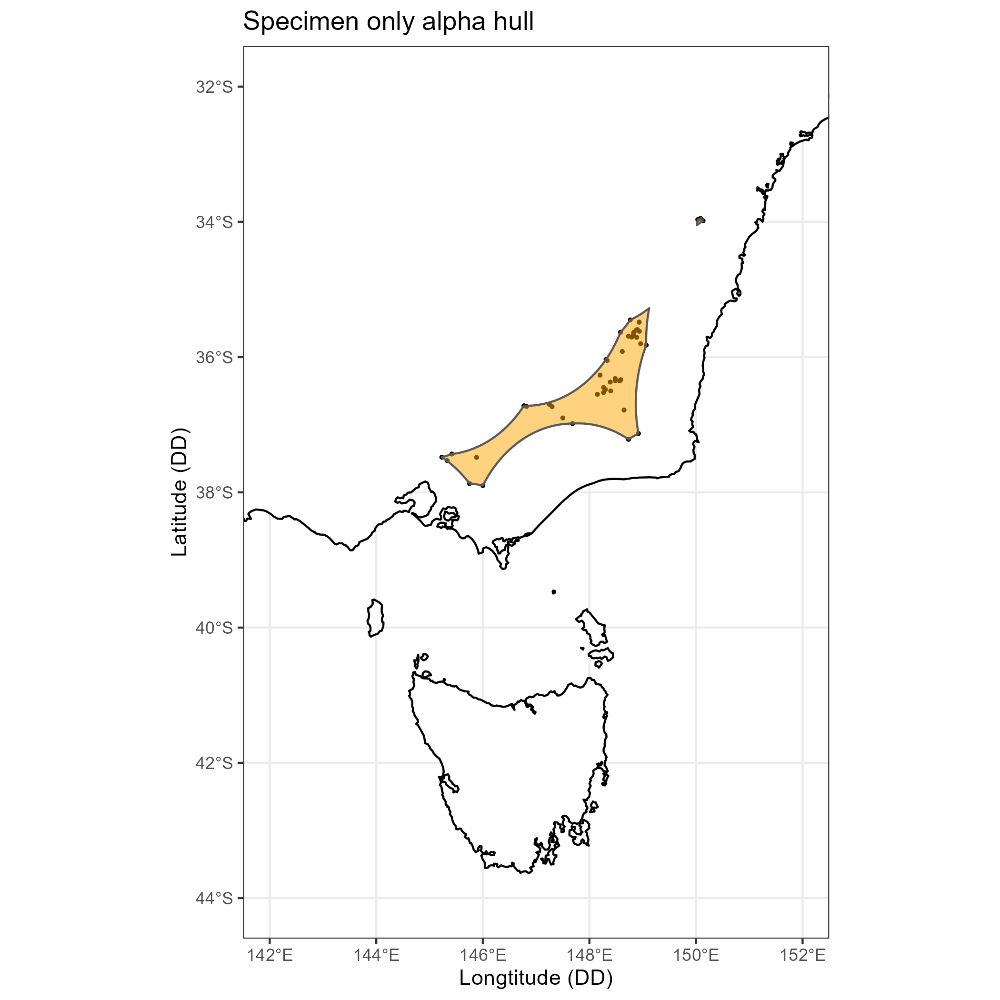
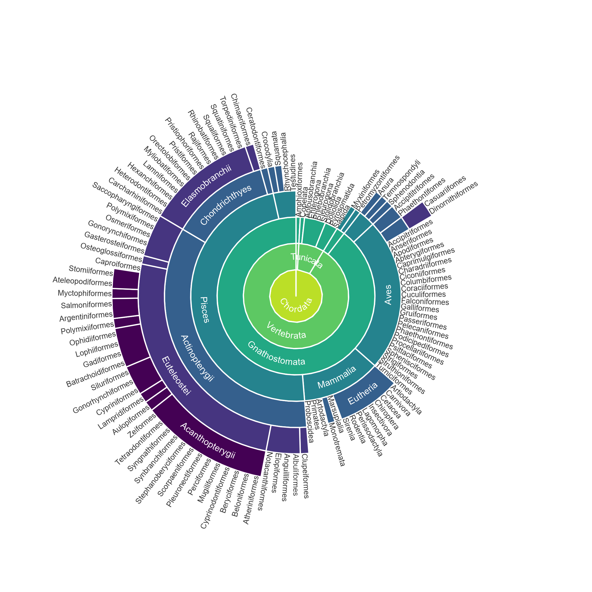

How-to articles to solve scientific problems
One useful way to see changes in a species’ habitat range over time is by using animation to view multiple distributions in succession. Here we will model the distribution of Nudibranchia across Australia each month to create an animated GIF of its distribution over a year.
Choropleth maps are an excellent way to visualise numbers of observations, but when using point data, calculating the number of points in each polygon can be difficult when using shapefiles. Here we demonstrate how to extract and summarise the number of points in each polygon to create a choropleth map.

Convex hulls and alpha hulls are wonderful alternatives for visualising species distributions when a species has very few existing observations. Here, we will show you how to create these spatial polygons using data from the ALA.
Human biases play a large role in the data we collect about species. Here we show a simple method to quantify the bias of roads, cities, rivers and airports on species observations of legless lizards in the Northern Territory
Using multiple colour scales can be a great way to visually differentiate between geographic categories on a map. Here, we demonstrate this by creating a choropleth map to represent the density of plant records from the ALA across bioregions in Australia, and add multiple colour scales to differentiate marine and terrestrial records
Making plots eye-catching can be useful for science communication. Here, we show how to make 3D plots in R with the rayshader package by visualising the number of species identified from ALA observations since 2020
rayshader

Since version 1.3.1 of {galah}, it has been possible to download taxonomic data using a ‘tree’ format from the {data.tree} package. Here I’ll demonstrate some ideas for plotting these trees using circular diagrams.
There are hundreds of color palettes in the R ecosystem, but sometimes we might want to use colors from a specific image. Here I show how to use the paletter package to create a color palette for the 2020 Eucalypt of the Year: the Western Australian Gimlet.
paletter
This work is licensed under a Creative Commons Attribution 3.0 Australia License
Copyright Terms of Use System Status